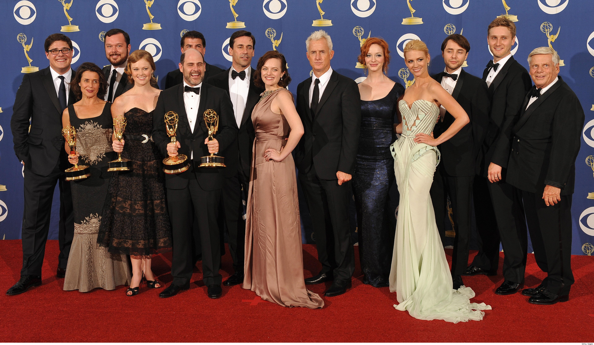
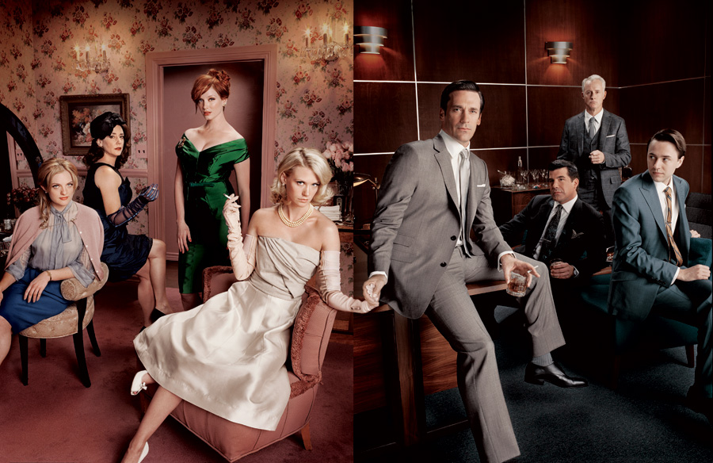
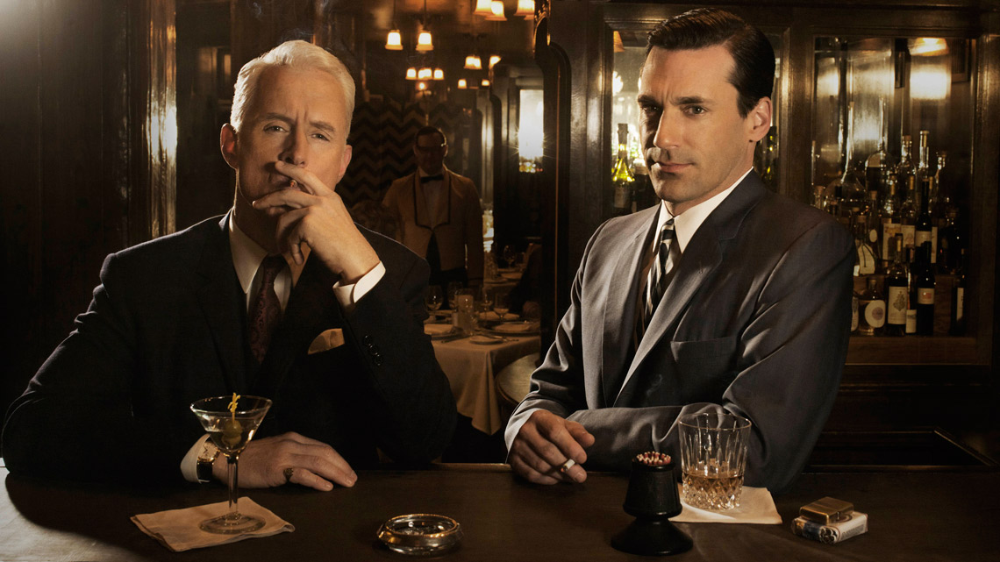
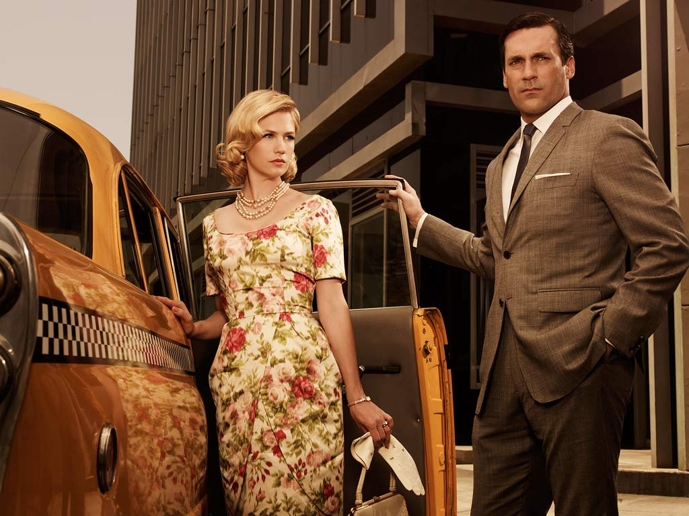

Set in 1960s New York, the sexy, stylized and provocative AMC drama Mad Men follows the lives of the ruthlessly competitive men and women of Madison Avenue advertising, an ego-driven world where key players make an art of the sell.
AMC’s award-winning drama Mad Men made history as the first basic cable series ever to win the Emmy for Outstanding Drama Series in four consecutive years. Created by Emmy and Golden Globe-winning executive producer Matthew Weiner and produced by Lionsgate, Mad Men has riveted audiences with the seductive and intriguing world of Sterling Cooper & Partners. This season, the series’ breakout ensemble cast continues to captivate as they grapple with an uncertain new reality.

Cast at the Emmies and Golden Globes
Created by Emmy and Golden Globe winning executive producer Matthew Weiner, Mad Men is anchored by an award-winning ensemble cast, including Jon Hamm, January Jones, Elisabeth Moss, Vincent Kartheiser, Christina Hendricks, John Slattery, Jessica Paré, Rich Sommer, Aaron Staton, Robert Morse, Kiernan Shipka, Jay Ferguson, and Christopher Stanley.
The Premise: The series revolves around the conflicted world of Don Draper (Hamm), the biggest ad man (and ladies man) in the business, and his colleagues at the Sterling Cooper Draper Pryce Advertising Agency. As Don makes the plays in the boardroom and the bedroom, he struggles to stay a step ahead of the rapidly changing times and the young executives nipping at his heels. The series also depicts authentically the roles of men and women in this era while exploring the true human nature beneath the guise of 1960s traditional family values.
Being with a client is like being in a marriage. Sometimes you get into it for the wrong reasons, and eventually they hit you in the face.- Roger Sterling
Frequently asked questions about Mad Men
How come no one can tell that Sal is gay?
It seems obvious to most viewers that Salvatore Romano, or Sal (Bryan Batt) is gay, yet the only one who seems to pick up on this is the one executive from Belle Jolie who is also gay. During the time period in which the character appears (1960-1963), gay culture was a far less prominent part of the culture than it is today. Furthermore, in the early sixties the kind of debonair sophisticate behavior which Sal exhibits had not yet become associated exclusively with homosexual men.
Do they really smoke all those cigarettes?
In several interviews, Jon Hamm (who plays Donald Draper) has stated that, on the set of Mad Men, they smoke "green" or organic cigarettes that have no nicotine in them. And no, it isn't marijuana either.
In what month and year is Mad Men set?
Season 1 opens in March 1960 and finishes Thanksgiving Day, 24th November 1960. Season 2 picks up on Valentine's Day, 14th February 1962 and ends in October 1962 with the peaceful resolution of the Cuban missile crisis. Season 3 starts somewhere during Spring 1963 with Betty Draper (January Jones) being approximately six months pregnant and ends on the evening of 16th December 1963. Season 4 begins around Thanksgiving in November 1964 and ends in October 1965. Season 5 begins on Memorial Day weekend in May 1966 and ends in March 1967. Season 6 begins at Christmastime in December 1967 and ends on Thanksgiving Day, 28th November 1968.
How come a 1963 Bob Dylan song is used at the finale of Season 1 set in 1960?
The first season ended on Thanksgiving Day 1960, with Don's marriage in tatters and the soundtrack blaring Bob Dylan's "Don't Think Twice, It's All Right", a song that didn't come out until 1963. "I didn't know if the show would be picked up," Matthew Weiner explained. "I was saying: 'Here's this song. This is what's coming.'"
Is Peggy's child being raised by her mother/sister?
I asked (series creator Matt Weiner) if Peggys sister is raising Peggys baby, and he said, no, that is not the case. Peggys sister was pregnant when Peggy had her baby, and the sister gave birth around the same time. Her youngest child is her own child; the sister is not raising Peggys offspring. Again, just to be clear: Peggys baby is not being raised by her sister. That child was given up for adoption.
Is Mad Men inspired after Richard Yates's novel "Revolutionary Road"?
John Cheever's short stories about midcentury suburbia were a major inspiration, but not Richard Yates's 1961 novel, "Revolutionary Road," to which the series is often compared. But don't watch the movie by the same name expecting to see a full length movie version of Mad Men, all it may share is the approximate time period and it's about a couple's relationship.
Mr. Weiner had never heard of Yates when he wrote the "Mad Men" pilot in 2000. "'Revolutionary Road' was given to me three years after I wrote the pilot," he said. He says if he had read the book before, he wouldn't have had the nerve to write the show: "Yates was there. This is what he was writing about."
Do Dick (Don) and Adam have the same parents?
They share the same father, Archibald Whitman. Dick's mother was a prostitute named Evangeline who died in childbirth; Adam's mother was Archibald's wife, Abigail. Dick's stepfather, Uncle Mack (Morgan Rusler) can be heard saying "You have the same father", when Dick (who later changed identities with Don Draper) says "He is not my brother..." in reaction to his stepmother Abigail Whitman (Brynn Horrocks) showing him her new-born baby named Adam.
How realistic is Mad Men?
Matthew Weiner and the rest of the production staff strive for accuracy in terms of props, language and themes. The issue of whether the "frat boy" atmosphere and the casual racism and sexism of Sterling Cooper is an accurate representation of 1960s advertising is apparently a contentious one. Some people who have worked in advertising at the time have taken issue with the inappropriate conduct depicted on the show (one interviewee mentioning that they had several female copywriters at his agency), while others have claimed that this behavior is accurate. On the show itself it's indicated that different agencies may behave differently (at one point for example Paul Kinsey comments that while Sterling Cooper drinks lots of booze, his friend works at an agency where they smoke more marijuana). It is possible that Sterling Cooper is an accurate portrayal of SOME agencies at the time and an inaccurate portrayal of others.Some critics also feel that Mad Men misunderstands the racism and sexism of the time and portrays the ad industry as more white and male than it really was. Critics have pointed out that while Peggy is the only female copywriter at Sterling Cooper, Helen Gurley Brown had been one of the highest paid copywriters in the industry in the 1950s. Also noted is a scene where Roger comments, somewhat amazed, that rival ad firm BBDO "hired a colored kid." Critics have noted that at the time the art director for BBDO was African American.
What is Don's position at Sterling Cooper?
At the start of the show in 1960, Don is head of the creative department of Sterling Cooper. In the season one episode "Indian Summer" he's made a partner with 12% of the company. In 1962, the company is bought by the British firm Putnam Powell and Lowe. At the beginning of season three Don seems to retain his position as head of Creative at Sterling Cooper. By the end of the season, Draper and much of the rest of the Sterling Cooper management have left to start a new agency. Don seems to retain much of the position he had in Sterling Cooper, being a partner (now with his name on a door) and acting as head of Creative. In today's terms he'd be called Chief Creative Officer or CCO.
Why did Don pay the elevator operator to say that the elevator was broken?
In the season one episode "Red in the Face", Roger makes a drunken pass at Betty after a dinner party. As revenge, Don arranges a lunch where he and Roger down copious amounts of alcohol and eat equally heroic amounts of shellfish. When they get back to the office, the elevator operator (as per Don's instructions) says that the elevator is out of order, forcing them to climb the many flights of stairs to the Sterling Cooper offices. The combination of oysters, booze, and vigorous labor make Roger sick and he ends up puking in front of some clients.
How could Peggy not know she was pregnant?
A lot of viewers seem mystified by the fact that Peggy did not realize she was pregnant in season one. It should be kept in mind that women still sometimes do not realize they are pregnant until late in their pregnancies. In fact enough of these cases exist to make a tv show about it (http://www.imdb.com/title/tt1239443/). In the early 1960s information about sexual and reproductive health was far less available than it is today. Barely a decade before Mad Men is set, Lucille Ball couldn't use the word "pregnant" on TV to describe her condition. Formal sex education for children was rare to nonexistent and as a Catholic Peggy likely got little or no sex education from her parents aside from proscriptive warnings against it.
Is Don's new wife the actress from the T-Mobile ads?
No, Megan Draper is played by Canadian actress Jessica Pare. The 'T-Mobile Girl' is played by another Canadian actress Carly Foulkes.
Who is Bob Benson?
Bob Benson shows up out of nowhere in season six as Sterling Cooper expand its business. Bob is extremely solicitous of others and has a certain air of mystery about him. As revealed towards the end of the season, Bob is something of a con man. He had worked as a servant, and possibly a sexual companion, for a partner at a rival agency. When the partner died, Bob took a rolodex and used its list of contacts to con himself into a job at Sterling Cooper. It's interesting to note that when we first see Bob he's sitting out in a reception area and is noticed by Ken who tells him to go back to his office. No one actually remembers hiring Bob and its possible that he simply lied his way into a job.
What is Duck Phillips' role at the end of season six?
In season six, Duck is working as an independent head hunter connecting prospective employers and employees. We see Pete talk to Duck early in the season when he's disatisfied with Sterling-Cooper. In the season finale, Duck accompanies a client to Sterling Cooper to interview for Don's job.

Main Characters of Mad Men
What's so good about Mad Men?
“Mad Men” has a curious status in our household. We came to it a couple of seasons late, as we do most things, after an even more belated binge on “The Wire” (five seasons squashed into five weeks, between last year’s political conventions and Obama’s big night). On the heels of that riveting panorama of corruption, cruelty, and struggle across classes and races in Baltimore, “Mad Men” seemed a little shallow by comparison: John O’Hara right after Dickens.
It’s gorgeous to look at—I don’t remember the early sixties being so stylish, but for me those years were mostly about applesauce and toilet training—with every cigarette, cocktail, pillbox hat, necktie, and telephone not just a triumph of attention to period detail but a fetishization of the objects themselves. This perfect surface is utterly seductive, and so it made me suspicious (my aesthetics tend toward the puritanical), as did the immobility of the Drapers’ faces and emotional lives, and the clumsy flashbacks, and the spurious premise of an altered identity, which tried to stand in for the main character’s lack of depth. After, and sometimes during, each episode, we would lob irritated questions back and forth: “So what?” “Is the character hollow, or the actor, or the material—and how would we know?” “Why doesn’t she go out and get laid for God’s sake?”
And yet—we watched every episode of the first two seasons on Netflix, and then recorded every episode of the third season while we were in Berlin, and scarfed down all of them in about a week after our return, and last night, when we thought for a moment that we’d missed the season finale, which would have been the first episode we actually watched along with the regular viewing audience, there was some real consternation before we realized our mistake. So the question is obvious: what’s so interesting about this annoying show?

Roger Sterling (left) having a drink with Don Draper (right)
“Mad Men” (and I’m about to channel thoughts that mainly originated with the other person in the living room) has a particular fascination for the generation that came after Don and Betty Draper and Pete and Trudy and Peggy and Joan and Ken and Paul, and the generation after that. Beneath the mesmerizing retro sheen lies the inversion of manners and morals: everything forbidden us is permitted to, even encouraged of, these men and women—smoking and drinking to excess, office sex up to and including blatant harassment, parental neglect, a kind of frank selfishness about ends and means. No one has to smoke outside the building like a furtive criminal, no one has to pretend to like his colleagues, adultery is a perk for men on the level of an expense-account Martini dinner. Relations between the sexes are openly exploitative, with only Peggy trying to make her way in a man’s world and paying a high price (among other things, she’s more single-minded and cut-throat about work than the men). Meanwhile, they go to self-destructive lengths to conceal what we accept and even advertise: childhood poverty, homosexuality, out-of-wedlock pregnancy. “Mad Men” is all about repression—every character has a tell-tale tic, and stiffness reigns over every scene—but it’s also about the license to indulge impulses that would soon be socially forbidden. Who wouldn’t like just once to leave their picnic garbage right where they finished eating it?

Mr. and Mrs. Draper
It’s not hard to understand why men might be drawn vicariously to the upside-down moral order of “Mad Men,” but what about the show’s legions of female viewers? The one I know best maintains that “Mad Men” presents a world that’s alien enough to be interesting as anthropology—not as remote as, say, a thirties screwball comedy, but headed in that direction—and yet not entirely so. It’s still close enough to us, or we to it, that there’s a certain familiar pain beneath the viewing pleasure. Peggy would no longer have to be such an oddball, but her dilemmas and agonies would hardly be unfamiliar to an ambitious professional woman today. The sexual politics of the office might be submerged beneath a host of written and unwritten codes, but the dangerous temptation to mix work and play for pleasure and advancement has hardly died. Many marriages are still structured so that one spouse—more likely the woman—has to live out her ambitions through the other (the unhappy premise of Richard Yates’ “Revolutionary Road,” set a few years before “Mad Men” and recently made into an excellent movie).
“Mad Men” shows the last years of a social order in which middle-class American men were little kings—slimy, anxiety-ridden, petulant, lifeless, but kings nonetheless. It’s all about to come undone—Peggy is the harbinger of the change—and soon give way to an age of confusion and improvisation, which is the age we still live in. Watching “Mad Men” might be what it was like for Americans of an earlier age, around the time of Lincoln, to see an eighteenth-century European costume drama: this is what the world looked like just before the old order fell. The roles were rigid and constricting, but they had the advantage of being roles, ready-made for men and women to put on and live in. You didn’t have to spend your energy inventing a way through the bewildering maze of unfamiliar social relations. It is no longer our world, and a good thing, too—but beneath the makeup and hair, the costumes and masks, this period piece still means us.